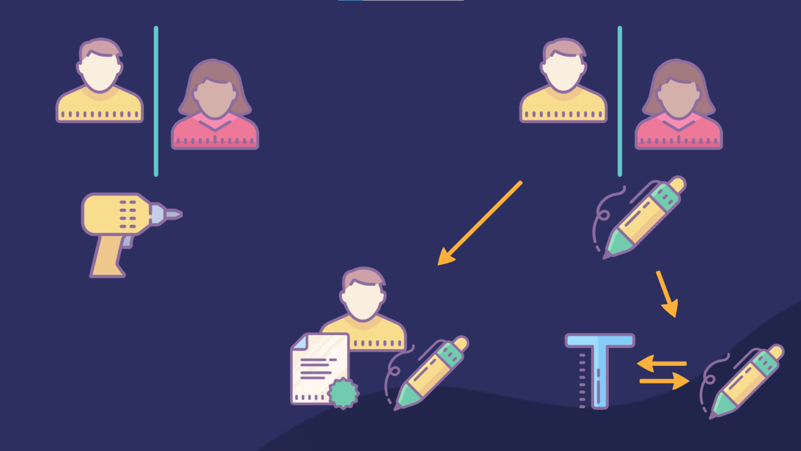

Introduction
This library is programmed for distinguish drilling persons.
There is a need to have two specific programs to get and save the measurement of the driller. The programms called drilldriver and drillcapture.
If you want to take off with this project, check out the packages and see the Tutorial.
Our application have following features:
Graphical-User-Interface
Good usability
Many possibilities (delete wrong drills, choose ml-algorithm and more…)
Stunning graphics
Easy to use
Possibilities of our future:
We have imagined a field of use, which can transfer to many other ideas.
Warning: it is far fetched and it may contain traces of humour. But it should still be allowed to have dreams. With that philosophy, let us start.
We present the authentic-copy tool, the friend of every student. You have to do some complex math and there are not much time left? You only need one solution. The authentic-copy tool reads the content out of this solution and converts its in your own writing style! Nobody will think that you have written off! (For real: learn and do your stuff by yourself)
Watch the video: https://prezi.com/view/TvhPlx4Yl0dVGcCnpvs9/ on this presentation you can also see other things about our project!
But wheres the connection to our project, right? Our project and the authentic-copy-tool can distinguish 2 people with physical properties in another domain. We thought further: what is, if it is possible to represent the learned drill-style or writing-style on new content. That would be great. And for the copy-tool there is one further component to translate written text to digital text.
The follwoing image describes that, graphically.
{kind=link}